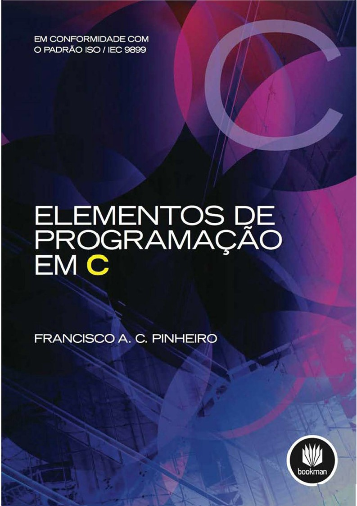
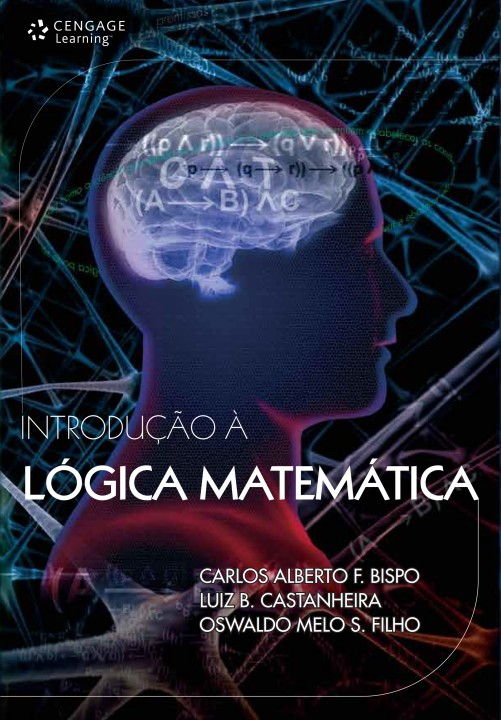
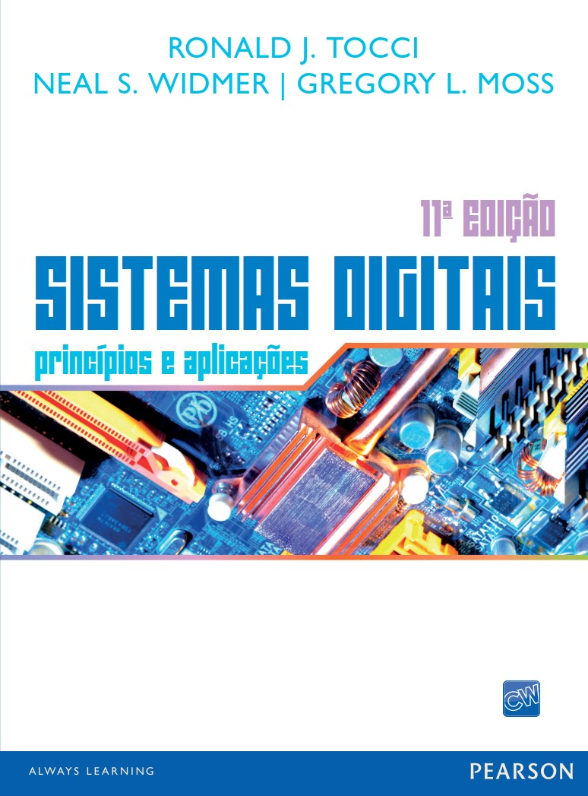

Introdução à Programação
Prof. Eduardo Ono

Descrição
Introdução a algoritmos, lógica de programação e linguagem de programação C.
Conteúdo Programático
| Aula | Data | Descrição |
|---|---|---|
| 01 | 14/02 | Introdução à Programação |
| 02 | 21/02 | Overview de Arquitetura e Organização de Computadores; Criação do Ambiente de Desenvolvimento para Programação em C |
| 03 | 07/03 | Primeiro programa em C; Tabela ASCII |
| 04 | 14/03 | Tipos de Dados; Variáveis; Operadores Aritméticos |
| 05 | 21/03 | Operadores Lógicos e Relacionais; Álgebra dos Inteiros |
| [06] | 28/03 | Estruturas de Seleção: if, if..else, Comando Ternário e switch |
| [07] | 04/04 | Identificação de padrões ("patterns") |
| [08] | 11/04 | Exercícios de Fixação |
| [09] | 18/04 | 1a. Avaliação |
| [10] | 25/04 | Estruturas de Repetição: for, while e do-while |
| [11] | 02/05 | Funções definidas pelo usuário Vídeos de Apoio (Bóson Treinamentos): 16 e 17 |
| [12] | 09/05 | Exercícios de Funções |
| [13] | 16/05 | Ponteiros; Funções: Passagem de parâmetros por valor e por referência |
| [14] | 23/05 | Aritmética de Ponteiros |
| [15] | 30/05 | Revisão para a Prova |
| [16] | 06/06 | 2a. Avaliação |
Pré-Requisitos
- Matemática Discreta
- Álgebra dos Inteiros (Opcional)
- Arquitetura e Organização de Computadores
Recursos
-
Editor de Fluxogramas: Flowgorithm
-
Compilador C: GCC
-
Editor/IDE: Microsoft Visual Studio Code (VS Code)
Material de Apoio
| Thumb | Descrição |
|---|---|
 |
[Bóson Treinamentos] Curso de Programação em Linguagem C (25 vídeos, YouTube, Jul/2021) |
 |
[Professor Rafael Ivo] Programação em C (14 vídeos, YouTube, Nov/2020) |
Bibliografia Básica
| Capa | Descrição |
|---|---|
 |
[DEITEL-6e_2011] DEITEL, P. J.; DEITEL, H.; C: Como Programar, 6 ed., São Paulo : Pearson Prentice Hall, 2011. https://www.bvirtual.com.br/NossoAcervo/Publicacao/2660 |
|  | [PINHEIRO_2012] PINHEIRO, Francisco A. C.; Elementos de Programação em C, Porto Alegre : Bookman, 2012. |
 |
[SALES_2017] SALES, A. B.; DEL ESPOSTE, A. M. Linguagem C: Aprendendo com Exercícios Resolvidos, Florianópolis : UFSC, 2017. |
Bibliografia Complementar
| Capa | Descrição |
|---|---|
|  | [BISPO_2011] BISPO, Carlos Alberto Ferreira; CASTANHEIRA, Luiz Batista; SOUZA FILHO, Oswaldo Melo; Introdução à Lógica Matemática, Cengage Learning, 2011. |
 |
[REESE_2013] REESE, Richard. Understanding and Using C Pointers, O'Reilly Media, 2013. |
 |
[SEDGEWICK_1990] SEDGEWICK, Robert. Algorithms in C, Addison-Wesley, 1990. |
|  | [TOCCI-11e_2011] TOCCI, Ronald J. Sistemas Digitais: Princípios e Aplicações, 11. ed., São Paulo: Pearson Prentice Hall, 2011. |
Vídeos Recomendados
| Thumb | Título |
|---|---|
 |
[Glauco Copeck XYZ] COMO ESTUDAR E APRENDER - Prof Pier (23:23, YouTube, Jan/2020) |
 |
[Eureka!] Como Aprender TUDO Que Quiser: Técnica Feynman (5 Passos) (7:32, YouTube, Mai/2019) |
 |
[Fabio Akita] Guia DEFINITIVO de Aprendendo a Aprender | A maior BRONCA da sua vida [RATED R] (1:04:37, YouTube, Abr/2020) |
 |
[CACiC FCT-Unesp] Bate-papo com Fabio Akita (1:42:40, YouTube, Mar/2022) |
 |
[Bóson Treinamentos] O que é preciso para ser um bom programador de computadores? (19:03, YouTube, Mai/2017) |
 |
[Filipe Deschamps] 50 Dicas Essenciais Que Todo Programador Deveria Saber (11:10, YouTube, Out/2020) |
Filmes e Documentários Recomendados
| Thumb | Descrição |
|---|---|
 |
The Imitation Game (2014) / O Jogo da Imitação Trailer legendado: https://www.youtube.com/watch?v=YIkKbMcJL_4 |
 |
The Man Who Knew Infinity (2015) / O Homem que Viu o Infinito (1:48:35, YouTube, Jan/2020) |